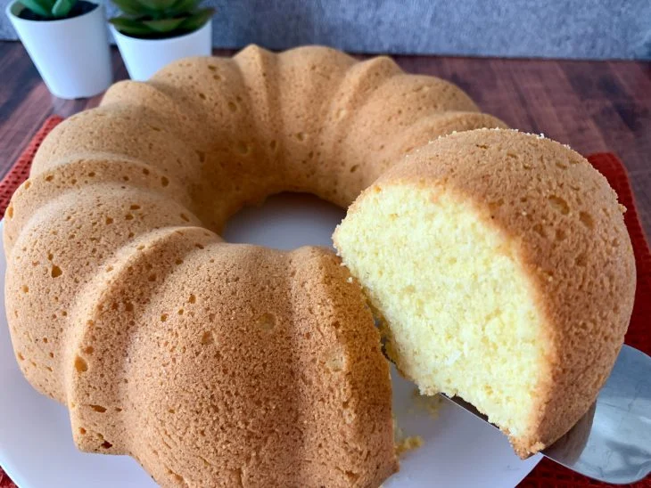

Bolo de Fubá com Coco

Se desejar acrescente cobertura ao seu bolo,
um brigadeiro branco combina muito.
Sirva o bolo quentinho, acompanhado de um café passado na hora.
Ingredientes
- 4 ovos grandes
- 1 xícara de chá de açúcar
- 1 xícara de chá de margarina ou manteiga
- 2 xícaras de chá de fubá
- 1 xícara de chá de farinha de trigo
- 3/4 de xícara de chá de leite de coco
- 1/2 xícara de chá de coco ralado
- 1 colher de chá de fermento em pó
Modo de Preparo
- Reúna todos os ingredientes;
- Em um recipiente, adicione os ovos, o açúcar e misture;
- Acrescente a manteiga e misture bem;
- Coloque o fubá e misture até dissolver tudo;
- Adicione a farinha, o leite de coco, o coco e misture bem;
- Finalize com o fermento e misture para incorporar;
- Transfira para uma forma untada, enfarinhada
e leve ao forno preaquecido a 180 ºC por cerca de 40 a 45 minutos; - Agora é só servir. Bom apetite.